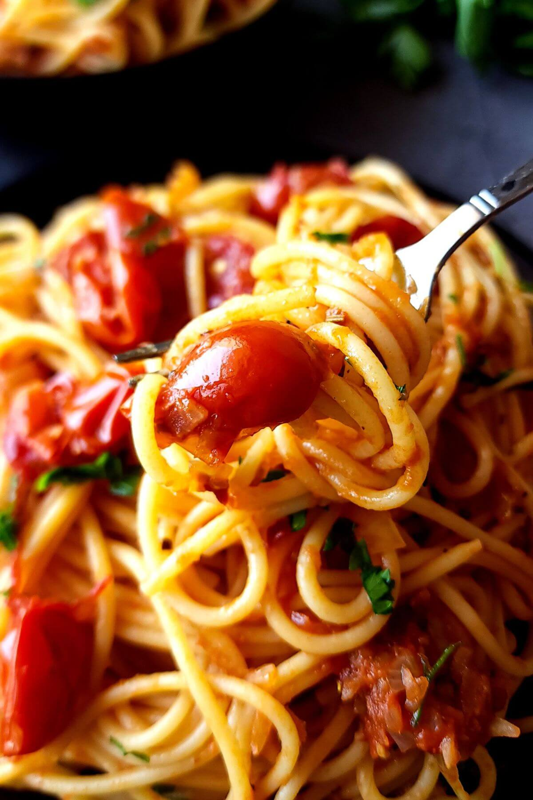

Spaghetti alla busara
La busara refers to a pot with a sieve insert in which scampi was
previously prepared.
Today the dish is usually served with lots of tomatoes and little
scampi.
Expense
40 Min.Difficulty
Medium